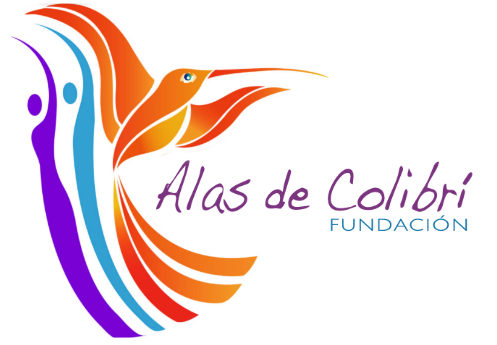

<div class="loginImage">
<div class="container" id="container">
	<div [formGroup]="formLogin" (ngSubmit)="onSubmit()" class="p-fluid  form-container sign-in-container">
		<form action="#">
			
			<!-- <input type="email" placeholder="Usuario" /> -->
      <p-divider></p-divider>
      <div class="field text-center">
        <label for="username" appLabel label="Usuario:"
               [required]="usernameField">
        </label>
        <input pInputText id="username" formControlName="username">
        <small appErrorMessage
               [errors]="usernameField.errors"
               [touched]="usernameField.touched"
               [dirty]="usernameField.dirty">
        </small>
      </div>
			<!-- <input type="password" placeholder="Contraseña" /> -->
      <div *ngIf="!isPasswordReset" class="field">
          <label for="password" appLabel label="Contraseña:"
                 [required]="passwordField">
          </label>
          <p-password id="password" formControlName="password" [feedback]="false"></p-password>

          <small appErrorMessage
                 [errors]="passwordField.errors"
                 [touched]="passwordField.touched"
                 [dirty]="passwordField.dirty">
          </small>
        </div>
			<!-- <a class = "btn btn-primary" href="/dashboard/solicitud">
				ingresar
				 <button routerLink="/dashboard/solicitud" class = "btn btn-primary">Ingresar</button>
			</a> -->
        <div class="field text-center">
          <button *ngIf="!isPasswordReset" pButton label="Iniciar sesión"
          class="p-button-help p-button-help"
                  icon="pi pi-sign-in"></button>
        </div>
		</form>
  </div>
	<div class="overlay-container">
		<div class="overlay">
			<div class="overlay-panel overlay-right">
				<h1>Bienvenidos y bienvenidas a la Fundación Alas de Colibrí</h1>
        <!--  -->
				<!-- <p>Este sistema ayuda a la comunidad de yavirac seguir el proceso de vinculación</p> -->
			</div>
		</div>
	</div>
</div>
</div>
